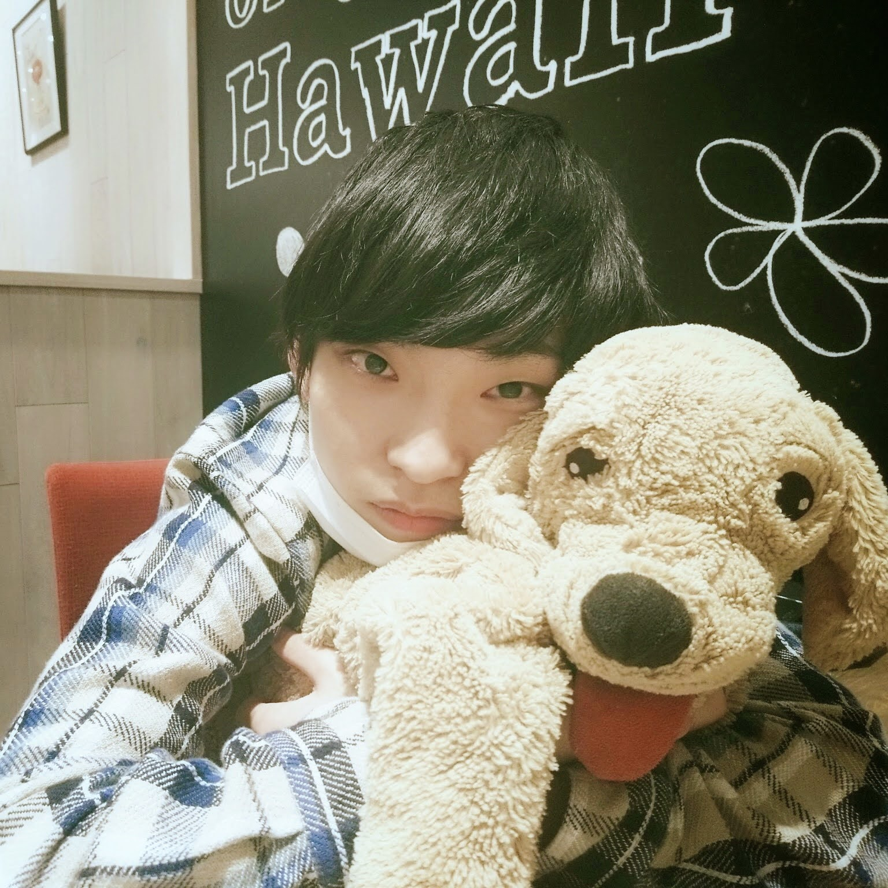

@takumi_postman
特別なことは何もない毎日を、そのままカメラに収めています。 晴れの日も、なんでもない日も。 ゆるっと覗いていってもらえたら嬉しいです。
なんてことない一日の記録から、ちょっとした遠出まで。気ままに投稿しています。
動画にしないくらいの些細な出来事や、撮影の裏側はこちらでつぶやいています。
感想やリクエスト、コラボのご相談などはこちらのフォームからお気軽にどうぞ。